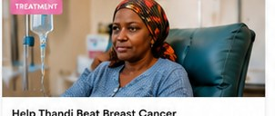
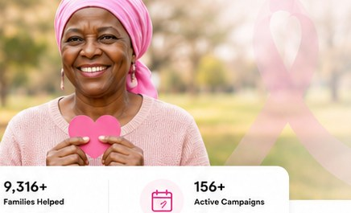
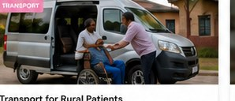
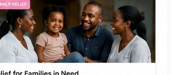
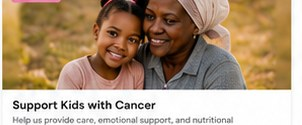
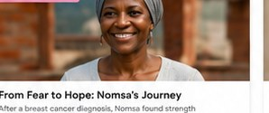
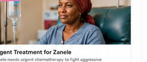
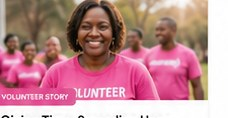

TreatmentHelp Thandi Beat Breast Cancer
Thandi is a mother of two fighting breast cancer. Let’s help her afford life-saving treatment and medication.
R86,400 raised of R120,000
72%Donate
Every act of kindness brings hope. Explore campaigns and help provide treatment, transport and care for cancer patients and their families across South Africa.


TreatmentThandi is a mother of two fighting breast cancer. Let’s help her afford life-saving treatment and medication.

TransportHelp us provide transport for patients travelling long distances to access treatment centres.

Family ReliefFood parcels, school support and essentials for families affected by cancer.

ChildrenCare parcels, nutrition and emotional support for children undergoing treatment.

Survivor SupportNomsa found strength through faith, care and a community that refused to let her walk alone.

TreatmentZanele needs urgent chemotherapy to fight aggressive cancer. Your support can save her life.
Reliable transport helps patients keep appointments and stay on track with treatment.
Help a family cover rent, food and essentials while they focus on recovery.

Survivor SupportSupport groups and wellness programmes for cancer survivors and caregivers.